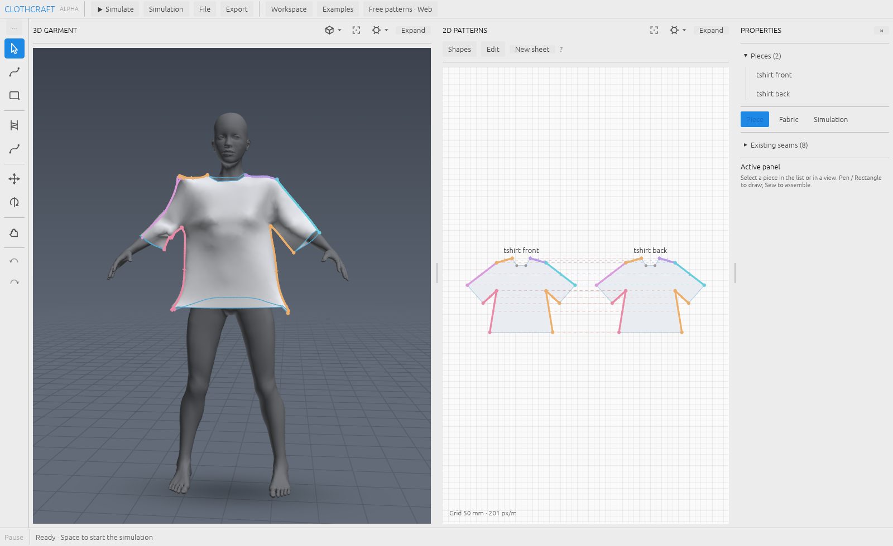

ClothCraft
An open-source garment editor and cloth simulation prototype, written in Rust.
Draw patterns, sew them together, place them around an avatar and simulate the result. This is a research prototype, not a production garment tool. Expect unfinished interactions and slow simulation on dense meshes.
ClothCraft is a fork of erythrofr/ClothCraft, the original project this one is based on.

Download
The Windows portable package is on the latest release. Unzip it and run Start ClothCraft.cmd.
The build is not code-signed, so Windows SmartScreen asks you to confirm the first launch. Choose More info, then Run anyway.
Build it yourself
You need Rust stable and Git.
git clone https://github.com/rsxdalv/ClothCraft
cd ClothCraft
cargo run --release --locked -j 2 --bin cloth-fit -- --steps 0 --view